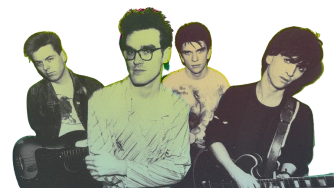

Dear Anisha
[The date when we were arguing with Naari, and the day I heard your voice]
You were just a small baby—when I heard you talk for the first time in the VC, I honestly thought you were a kid. The day Naari heard your voice and said, “She’s a star?” and the way you were worried about it… man, that day I felt like covering you with my wings. I didn’t know what I was doing, but something about you made me want to care and protect you, even though I didn’t know you well back then.
But eventually, when I started talking to you, it felt close—as if I were speaking with someone I’d known for a hundred years.
The way you explained how your kids would be, and how you’d dress for the PTM, and I jumped in saying, “What if the husband comes on a sports bike in a suit?”—that was funny but also a little embarrassing for me.
I wanted to be a part of every chapter of your life. I wanted to share every happiness you experienced. When I said “kuch dik raha hai kya” while sending my childhood pic, I still smile remembering how beautiful your laugh was. I wanted to hear that laugh at every moment—not just hear it, but cherish it, and let it bring joy to my heart.
Your memories keep flooding in. I’ve started imagining a beautiful life with you. Maybe I sound stupid, but hey—it is what it is. After hearing your story, most would’ve probably walked away. But I stayed. Even though I questioned myself, here’s the thing: I wanted to change you. People might have a bad perspective about you, but I don’t. I stayed because I want you to be the best version of yourself. I couldn’t leave a kind-hearted angel alone, could I?
Sometimes I imagine surprising you by riding a bike all the way to Nepal just to meet you. For that, I’d earn enough money, build up my courage, and mostly—gain self-confidence.
I don’t know how others describe angels, but here I am—describing mine.
Her eyes are like the evening sea, bringing calm every time you look into them.
Her voice is like light in the middle of lost darkness.
Her face is like a mirror—every time I see it, it reflects my life.
Her behavior is like a flower surrounded by grass—delicate, beautiful, and gentle.
उनको आँखा साँझको समुद्र जस्तै छ,
तिमीलाई हरेक पटक हेर्दा रमाइलो बनाउँछ।
उनको आवाज हराएको अँध्यारोमा उज्यालो जस्तै छ।
उनको अनुहार हरेक पटक देख्दा ऐना जस्तै छ,
यसले मेरो जीवनलाई प्रतिबिम्बित गर्छ।
उनको व्यवहार घाँसले घेरिएको फूल जस्तै छ।
The day when you expressed that you like me, honestly the only thought I got was “this is never gonna work.”
I said I wasn’t ready for all that — even I doubted myself. But after spending those hours with you, through all those meaningful, deep conversations… it really feels like there’s no need to rush.
We can do a lot of things together! We can call, do pranks, play games online, make videos and upload them… there are endless possibilities.
I’m improving every single day, and I know I’ll achieve all my goals. And I genuinely wish for great success in your future too.
I know I’m childish sometimes, but hey — I’m not like that with everyone :)
If you think this is too much, well… no worries, because I thought the same — LOL.
But here’s the thing: you can do whatever you want, for I’m with you.
With loveeeee,
Srujan aka Flash ü•µ
